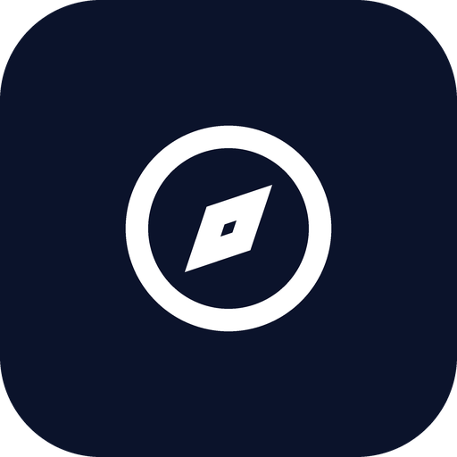
NusantaraPass — Pamflet Instagram Carousel Feed (5 Slide)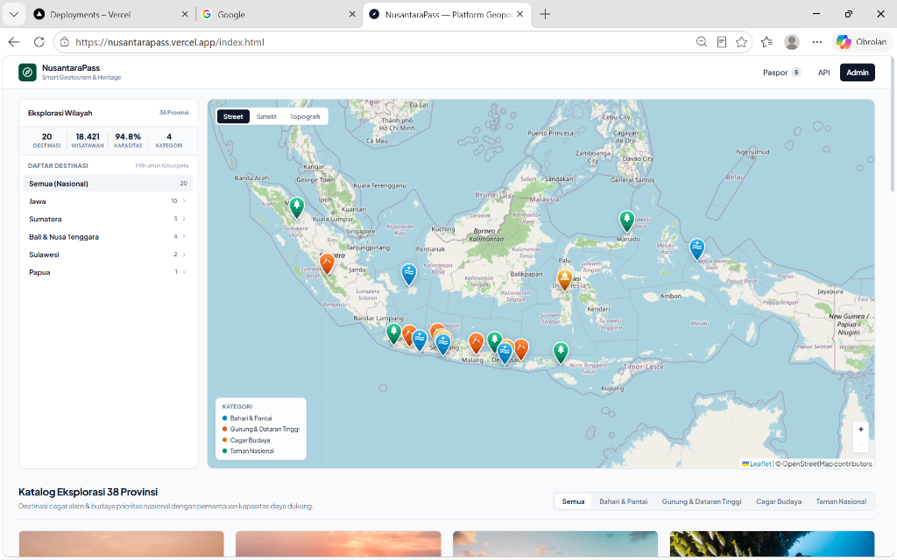
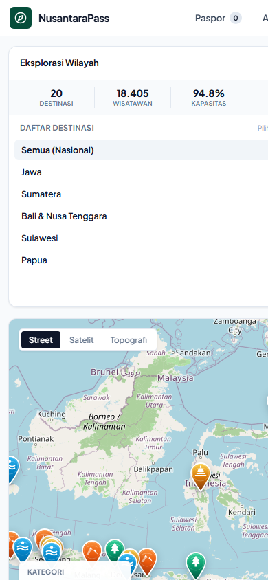
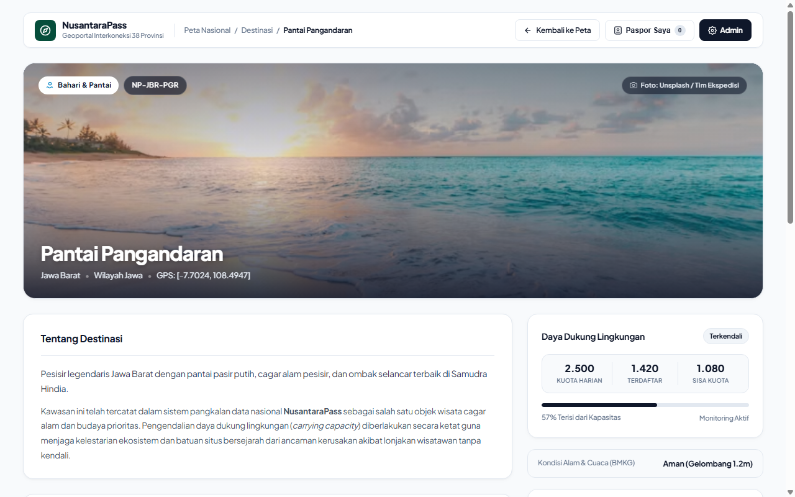
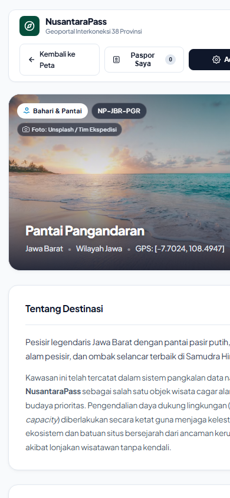
Wisatawan dapat memanfaatkan Peta WebGIS Interaktif 38 Provinsi untuk memantau beban kunjungan di seluruh cagar alam prioritas Indonesia secara aktual. Dilengkapi sistem zonasi kuota otomatis berbasis daya dukung lingkungan (carrying capacity)—dengan indikator visual Aman (<60%), Waspada (60–84%), dan Kritis (≥85%)—sistem memberikan peringatan dini guna mencegah penumpukan massa (overtourism) di kawasan konservasi rentan.
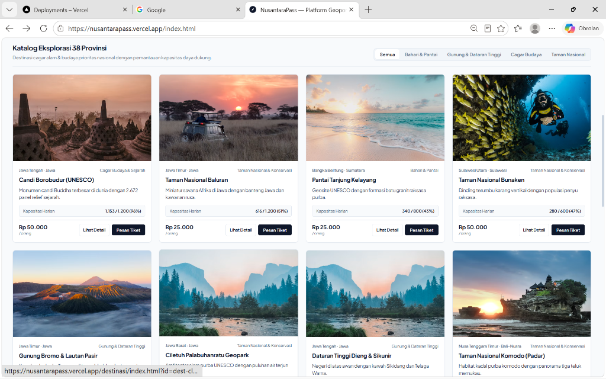
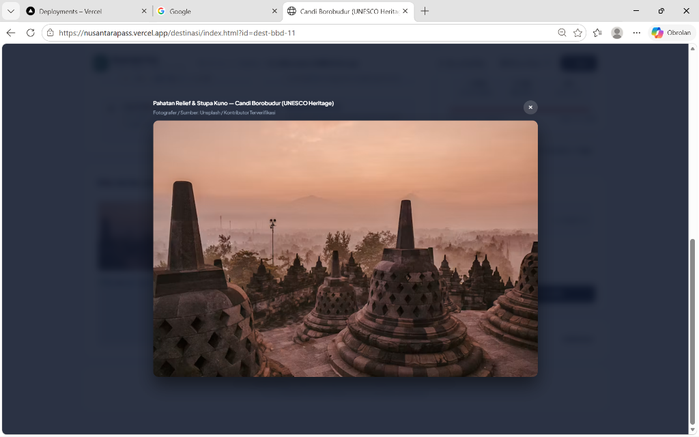
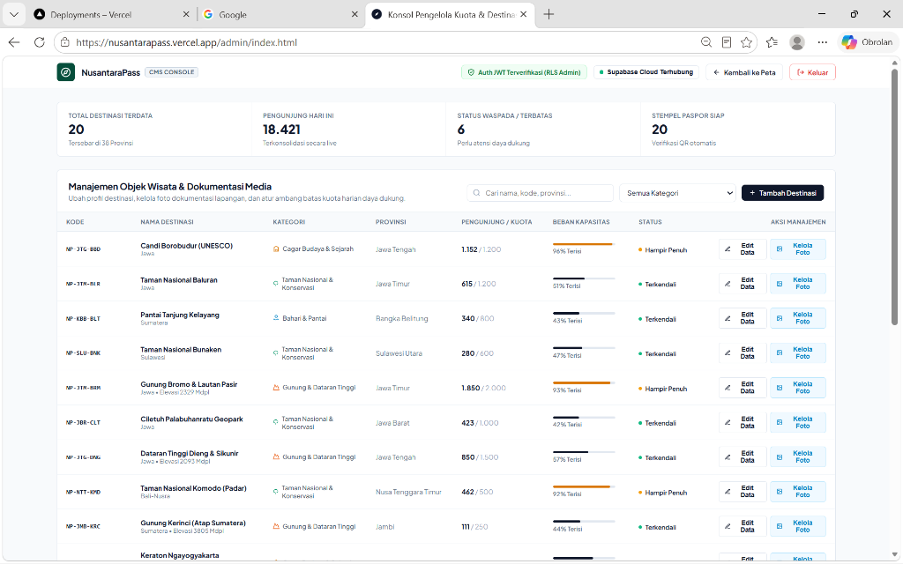
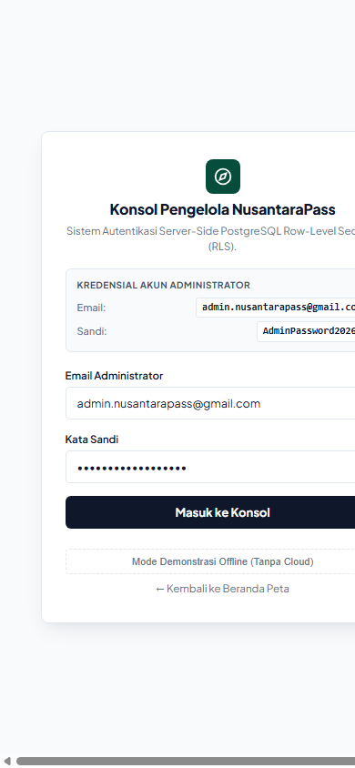
Tampilan Beranda (Dashboard WebGIS) menyajikan visualisasi data persebaran objek wisata konservasi dengan klaster penanda 3D adaptif dan filter regional kepulauan (Jawa, Sumatera, Bali-Nusra, Sulawesi, Papua). Sistem menghitung persentase keterisian kawasan secara matematis langsung dari basis data cloud PostgreSQL Supabase, menjamin transparansi informasi tanpa jeda pemuatan bagi publik.
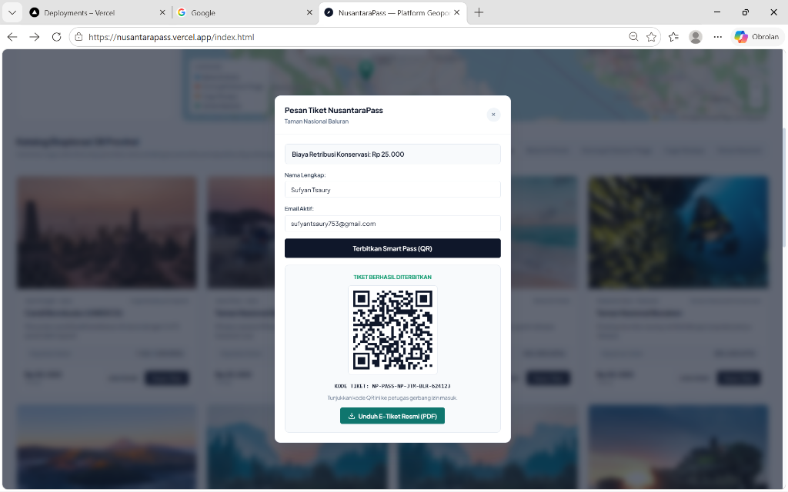
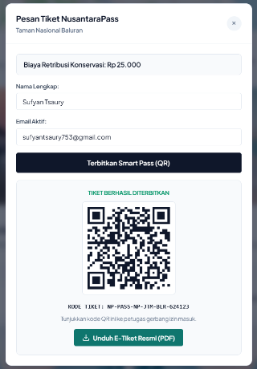
Sistem menghadirkan Pemesanan E-Tiket Resmi instan berformat QR Code unik yang dapat diunduh langsung dalam format PDF dengan validasi kriptografis Web Crypto SHA-256 tanpa perlu login rumit (zero-friction UX). Saat kuota destinasi prioritas penuh, fitur Buffer Redirect secara otomatis merekomendasikan desa wisata penyangga di sekitarnya (seperti Desa Wanurejo saat Borobudur penuh 98%) guna menjaga keutuhan ekosistem cagar alam.
Pengelola balai konservasi dan petugas pos lapangan dibekali Konsol CMS Terpadu untuk memperbarui batas kuota harian, mengelola dokumentasi media, serta mencatat status kedatangan pengunjung secara terverifikasi. Seluruh jalur mutasi data dilindungi dengan kebijakan Row-Level Security (RLS) PostgreSQL dan autentikasi token JWT Supabase tepercaya, memastikan sistem kebal terhadap upaya manipulasi otorisasi di sisi peramban.
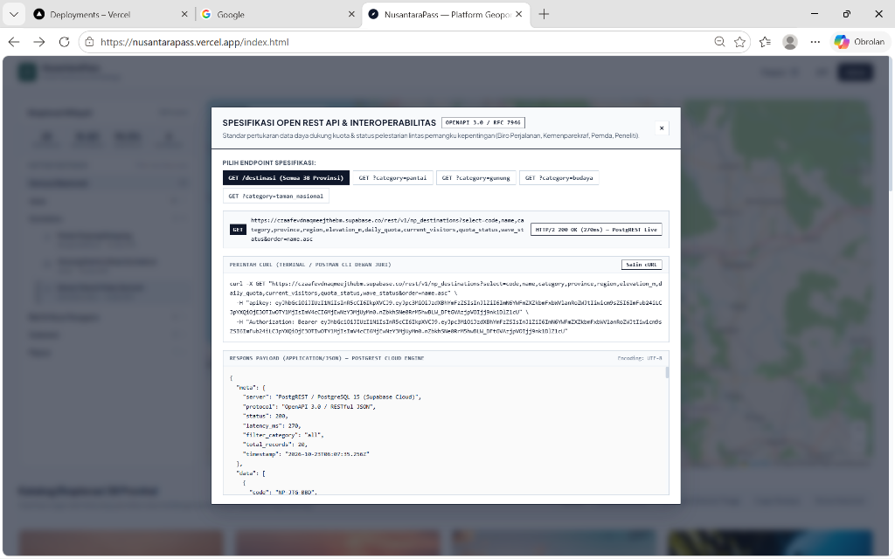
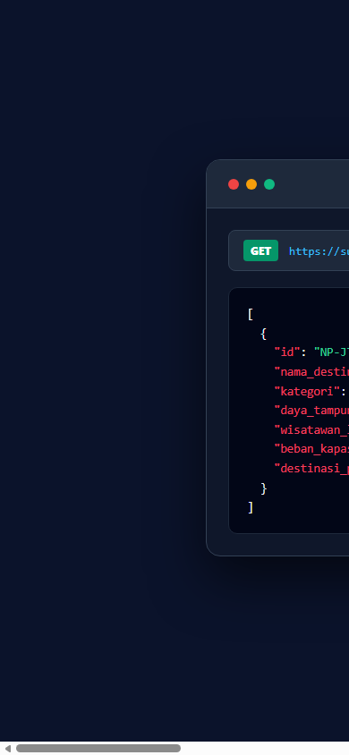
NusantaraPass membuktikan bahwa perpaduan sains daya dukung lingkungan dan teknologi WebGIS modern mampu menjadi instrumen nyata pelestarian alam khatulistiwa. Dilengkapi dengan Developer REST API Sandbox publik, platform ini siap diintegrasikan dengan aplikasi pihak ketiga guna mendorong redistribusi ekonomi pariwisata yang adil dan berkelanjutan bagi masyarakat lokal Indonesia.